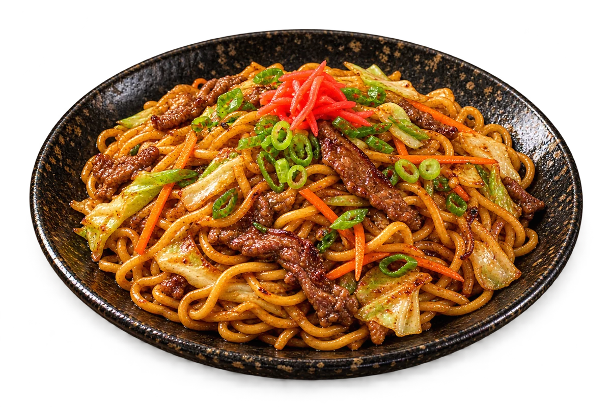

DA PANELA PARA A MESA
Yakisoba
焼きそば
Macarrão salteado com carne, legumes e molho, em um prato cheio de textura.
MACARRÃO, CARNE & LEGUMES
Consulte a casa
Imagens e composições ilustrativas. Confirme ingredientes, porções e valores com o restaurante.
O SABOR ESTÁ NOS DETALHES
Para conhecer.
Para saborear.
Os noodles encontram a panela quente junto de legumes e carne. Um prato de aroma envolvente, com o prazer de alternar o macarrão e os vegetais a cada garfada.
NA COMPOSIÇÃO ILUSTRADA
- Macarrão de trigo
- Carne bovina
- Repolho
- Cenoura
- Cebolinha
- Molho
ALÉRGENOS DA COMPOSIÇÃO
Trigo, Soja, Pode conter gergelim
Confirme o preparo e possíveis restrições diretamente com a casa.